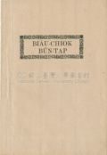
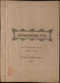
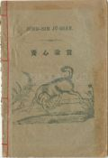

Languages
台文
｜
中文
｜
日本語
｜
English
字體
小
｜
中
｜
大
首頁
/
白話字數位典藏
白話字數位典藏全文檢索
查詢模式
選擇年代
清國時代(1885-1895)
日本時代(1895-1945)
戰後(1945-1969)
1885-1895
1896-1905
1906-1915
1916-1925
1926-1935
1936-1945
1946-1955
1956-1965
1966-1969
1970-1980
1980-1990
1990-2000
2000-2010
2010-
選擇文類
詩
散文
小說
戲劇
傳記
選擇作者
陳清忠
陳清義
編輯部
柯設偕
吳天命
明有德
偕叡廉
周天來
劉華義
王守勇
林茂生
陳添旺
王占魁
柯維思
賴仁聲
陳瓊琚
雪峰逸嵐
吳清鎰
郭水龍
蕭樂善
許水露
葉金木
陳金然
章王由
廖得
鄭連坤
楊士養
潘道榮
梁秀德
劉約翰
周淑慧
高金聲
林燕臣
黃六點
蔡愛義
許有才
主筆
巴克禮
陳鳩水
郭朝成
張基全
陳明清
陳能通
拾穗生
顏振聲
卓恆利
傳道局
胡文池
劉主安
鄭兒玉
其他
古樓主人
Google Search
Yahoo Search
全部
刊名
標題
標題(教羅)
全文
全文(教羅)
作者
第4頁，共7頁(共139筆資料) 0.63392210006714sec
1
2
3
4
5
6
7
To Page
GO
文字列表
圖文列表
排序
日期
文類
刊名
作者
影像
[1956-7 台灣教會報 文類-小說 作者-廖得/Liāu Tit]
雜錄：台灣聖神 [ Cha̍p-lio̍k Tâi-oân Sèng Sîn ]
台灣聖神(廖得) 世間攏總m̄-值耶穌Tī 77年前， pè地方西螺有Chiu Ú 伯， in kuí-nā人去嘉義禮拜，每禮拜往回 tio̍h行12 鋪路， 費了3日工ê為難，就tī 茄苳仔設禮拜堂。Hit時pè tông 叔公 teh 教學仔，有財產； hiah ê跋-kiáu，食阿片ê 歹 叔孫仔， ta̍uh-ta̍uh ài 鬥外人來kā伊掠去摃翻頭。 Tuì án-ni pè tông叔公就入基督教； chū án-ni hiah-ê 歹仔就m̄敢koh掠--伊。有一日pè tông叔出去， hiah-ê 歹囝仔看tio̍h講："入教仔囝" Pè tông叔應講， "我m̄是入教仔...
[1956-9 台灣教會報 文類-小說 作者-廖得/Liāu Tit]
歷史故事：台灣聖神 [ Le̍k-sú Kò͘-sū Tâi-oân Sèng Sîn ]
台灣聖神(廖得) 虎某變福母。約tī 80年前， tī 東港地方，有一個無信主ê人，做定tio̍h一個新婦，後來hō͘人算命，講是帶 "鉸刀柄，鐵掃帚。"真煩惱！有一個姓 吳 ê會友kā伊講， "你若驚， hō͘伊來配我ê 囝，做傳道娘，"後來果然成事。吳傳道結婚後，兩人去toà道會， 新金每月三 幾 kho͘ 銀。傳道娘真gâu生育，直直生到十goā ê，日時無食到飽，穿到燒；日暗，大漢細漢，東倒西歪，有ê倒tī nî-chîⁿ腳，有ê仆tī 戶碇頭，有ê睏tī 灶前，大人beh睏ê時， kia̍h 燈仔火去揣，一個一個， 拎拎掠掠去眠床；最後chiah算一，兩，三，看有chiâu tī-t...

[1914-1 台大楊雲萍文庫白話字史料(編修) 文類-小說 作者--/-]
(22)
廟祝問答 [ Biāu-chiok Būn-tap ]
...
[1957-1 台灣教會公報 文類-小說 作者-廖得/Liāu Tit]
歷史故事台灣聖神 [ Le̍k-sú kò͘-sū Tài-oân Sèng Sîn ]
歷史故事 台灣聖神 台灣姊妹生日本牧師 1957.01 817號 p.24-26 廖得 約佇300年前，羅馬公教(天主教)佇日本傳道；為著信仰，民教衝突，有起大戰爭。後來政府就將天主教拍滅，紲毋准百姓佮外國人往來；只有予荷蘭的醫生佮in的船隻，佇長崎港口通商交接。 到90年前，明治維新的時，舊底滅無了的羅馬公教會信徒閣復興；也對歐美逐國的福音教會有派人去日本傳道；社會的人，叫前來傳的天主教做舊教，也予新來傳的福音教會做新教。雖然in的憲法是訂「人民有信教的自由；」總是為著in祖先的冤仇，永遠無欲佮基督教徒戴siāng一个天！ 彼時有一个青年的學者，叫做新島襄，有一日...
[1926-6 芥菜子 文類-小說 作者-雪峰逸嵐/Soat-hong Iat-lâm]
(3)
故事：仁愛的報賞 [ Kò͘-sū: Jîn-ài ê pò-siúⁿ ]
故事：仁愛的報賞 有一个查某囡仔無兄弟姊妹，爸母閣早過世；按呢算是孤單的歹命囝。姑不將就倚伊的叔，受伊照顧。伊的叔是好額的作穡人，有真濟的厝宅、田園、牛羊；也有倩工--的，也有兩个真媠的查某囝。總是這个叔雖然遮爾好額，毋kú看這个侄女攏毋上目；因為伊無爸母閣散鄉，無共伊做侄女款待；就叫伊設法牛奶間，－無論lu̍t牛奶，洗kan仔，摒掃內面，攏著做。佳哉歹命囝真歡喜做攏無怨恨，日過日勤勤做工攏無嫌艱苦。到暗就平平安安睏佇伊的眠床，家己想是親像睏佇王宮內，又閣真gâu體貼人。所以規庄的人攏叫伊「仁愛的歹命囝！」 有一擺，in 叔大收成，辦筵席，請真濟人客，不...
[1926-6 芥菜子 文類-小說 作者-陳清忠/Tân Chheng-tiong ]
(2)
一滴一滴的水 [ Chi̍t tih chi̍t tih ê chuí ]
一滴一滴的水 (續接前號) (11) 守錢奴 一个守錢奴將伊一tè金角 tâi佇土內，也逐日去遐看來做快樂。有一日知伊彼tè金角予人偷提去，真傷悲，就出大聲吼。隔壁的人看見伊按呢就共伊講。「請免傷悲，提這tè石頭tâi佇彼空，也想彼tè是金，就彼tè石頭，對你來看佮黃金是相同；因為黃金佇彼空的時，你都攏無用--伊。」 教示 咱不時teh聽寶貝的真理，毋知有幾个提利用彼个寶貝？若是有入無出，心內所積聚的真理，佮彼tè石頭有啥物kò樣？！著行！！ (12) 驢佮螽斯 (蟋蟀) 這日，一隻驢仔聽見濟濟隻螽斯 teh唱歌，in 的聲音予...
[1926-1 芥菜子 文類-小說 作者-陳清忠/Tân Chheng-tiong ]
(4)
一滴一滴Ê水 [ CHI̍T TIH CHI̍T TIH Ê CHUÍ ]
「一滴一滴Ê水」 (1) 老ê獅 有一隻真老ê獅，倒佇土腳teh欲死 也以前捌予這隻獅處治ê獸，幾若隻來欲kā伊報仇。山豬就用伊ê牙撟伊ê腹肚 牛就用角觸伊ê kái邊；驢á也到，cha伊已經無危險，就越lìn轉，用兩支ê後跤，出力對面就kā伊踢去。可憐ê老將軍忍袂稠就haiⁿ一聲講「Ah，予你這扮貧賤ê獸，用腳來踢，實在比死一百遍khah艱苦！」 教示 陷害人ê人，著會記得伊後來也會拄著這款ê運...
[1926-1 芥菜子 文類-小說 作者-其他/Kî-tha]
(4)
聖經做滿足慾望Ê妙用 [ SÈNG-KENG CHOÈ MOÁ-CHIOK IO̍K-BÒNG Ê BIĀU-IŌNG ]
聖經做滿足慾望Ê妙用 人類佇地面上是做萬物ê頭，所以人類生存ê慾望比眾動物是khah強khah大。想到原始ê人teh生活ê款式，就知in ê慾望khah少，也知in ê性質kap道德甚麼款式。濟濟人teh講古早人khah老實，khah忠厚，khah無罪過；chiah-ê話是事實。Kiám-chhái有人欲反對講：無的確；毋過若kap聖經ê教示欲來相調和，袂免得著kap彼个講古早人khah無罪人共鳴。咱來看古早人也無聖經ê教示，也免受律法&e...
[1926-5 芥菜子 文類-小說 作者-陳清義/Tân Chheng-gī]
(2)
一滴一滴的水 [ Chi̍t tih chi̍t tih ê chuí ]
「一滴一滴的水」 (紲接以前) (7) 神佮車夫 有一个人駛一隻馬車，載真濟物，經過爛溝糜的細條路；因為車輪牢土糜。，所以馬拖攏袂進前。 為著按呢，這个人。全然無勞碌，隨時跪落佇土糜頂，大聲hiu神來幫贊。 神就應講，「貧惰的人ah，將你的肩頭掛佇車輪，出力照所會來sak，按呢iáu-kú若著欠用我的幫贊，我就歡喜聽lah ！著會記得彼句俗語講，「天幫贊自助的人。」 教示 常常聽見人teh祈禱的時，所求佮這款siâng類--的不止濟。「爸ah，你的福音到台灣已經五十外年久lah！但是來信你的人是真少。求你著將你的神開啟 in 的心，予in緊緊來佮阮相佮行這條天的路，通來得...
[1952-12 台灣教會公報 文類-小說 作者--/-]
聖誕老人 [ Sèng-tàn lāu-lâng ]
聖誕老人聖尼古拉 (Santa Claus)的故事1952.12 768號 p.21-22尼古拉是一个好額人，總--是愛用伊所有的錢幫贊別人。伊毋愛得著人的感謝，也毋愛予散hiong人覺得見笑，所以常常用暗靜的法度來送錢。得著錢的人煞毋知著感謝是誰。佇城市內有一个真散hiong的人佮伊3个查某子。這个人真可憐，因為伊無錢通予伊3个查某子做客。尼古拉決心欲幫贊這个人。伊想來想去，就到路尾想出一个真好的法度。尼古拉聽候到暗，就用烏衫來moa，趕緊到佇彼个人的厝。是真oh揣,因為彼所在的城市真cha̍t，閣這个人的厝是真細間。尼古拉行到佇遐的時，就四界看，看無人，趕緊對伊的衫提出一个貯滿金的袋仔。有...
[1950-8 台灣教會公報 文類-小說 作者-古樓主人/-]
我想攏無 [ Goá siūⁿ lóng bô ]
我想攏無1950.08 740號 p.15古樓主人作一隻蜜蜂佮蚊仔teh談論。蚊仔問蜜蜂講：「蜜蜂兄！我有幾若項佮你真相像，你有翼，會飛，我也會；你是蟲豸的一項，我也是；閣你會叮--人，我也會。毋過一項我想攏無！按怎我飛到遐，人共我趕到遐；我若叮人，人欲共我拍。因何你猶原會叮人，閣人若予你叮--著，比我較食力，按怎人遐疼你，遐保惜你，起厝予你蹛，寒天時閣用糖水予你啉，這是按怎？我想攏無！」蜜蜂講：「Hió͘！我chēng到今卻也毋捌想對遐去，若共想真，大概是按呢。你佮我雖然平平會叮--人，猶過你teh叮人佮我無像款；你是為著欲suh人的血來飽你的腹肚，為著顧家己teh叮人。我是暝日為著人類造福...

[1917-1 台大楊雲萍文庫白話字史料(編修) 文類-小說 作者--/-]
(21)
仰望地 [ Gióng-bōng Te ]
...
[不詳 台大楊雲萍文庫白話字史料(編修) 文類-小說 作者--/-]
(49)
銀冰鞋 [ Gûn Peng-oê ]
...
[1969-1 台灣教會公報 文類-小說 作者-賴仁聲/Loā Jîn-seng]
宗教小說：伊關心tī你 [ Siáu-soat：I koan-sim tī lí ]
宗教小說：伊關心tī你賴仁聲 Beh暗lah，我tī讀冊廳teh讀冊，忽然牧師娘tuì外面入來， kā我講：伊tò來lah；soà講伊今仔日tī彰化醫館口tú著翠霞。 我問伊講，是tò一個翠霞（翠霞）。伊應講，是tiàm-tī 瑞鹿（瑞鹿）hit-ê。伊趕緊beh去煮 ē-hng頓，就做伊oat去灶腳。 我ê心真緊， 連鞭想tio̍h我20年前去jīm in ê教會龍水（龍水）當時ê情形。 Hit時翠霞約32，3 歲，當龍水教會 ê執事，hoāⁿ教會ê 會計，常常the̍h錢來hō͘我， siông kap阮坐hân-tâm過去ê事，所以我kap我有婦人人攏kap伊真親密，伊也真熱心服事主。...
[1969-2 台灣教會公報 文類-小說 作者-賴仁聲/Loā Jîn-seng]
宗教小說：伊關心tī你 [ Chong-kàu siáu-soat：I koan-sim tī lí ]
宗教小說：伊關心tī你賴仁聲 翠霞 tuì好景日光普照ê山尖，忽然摔落去萬丈ê深淵ê一個少婦，實在攏烏暗天地，四面看無路， 人亡家散(人亡家散)，人無去啦， 陳家散去啦， 土話俗語講起有影， "日頭chhiah iāⁿ-iāⁿ， 隨人顧性命"， 大難臨頭各自飛(大難臨頭各自飛)。 Taⁿ中心人物無去啦 ， 限一月日內tio̍h 繳還開業執照， 陳齒科只好關門大吉。當紅，當chhèng， 生理lōng-lōng滾，治療床kuí-nā張，甚麼人m̄知瑞鹿陳齒科。忽然tio̍h關店， koh tio̍h繳牌。 Ah！氣勢一落千丈(氣勢一落千丈)，啼笑皆非(啼笑皆非)，真正是beh怎樣講？大兄踏大孫...
[不詳 台大楊雲萍文庫白話字史料(編修) 文類-小說 作者--/-]
(17)
聖誕故事 [ Sèng-tān kó͘-sū ]
...
[不詳 台大楊雲萍文庫白話字史料(編修) 文類-小說 作者--/-]
(27)
希蘭的目的 [ Hi-lân ê bo̍k-tek ]
...
[1929-1 台大楊雲萍文庫白話字史料(編修) 文類-小說 作者--/-]
(54)
益智錄卷二 [ Ek-tì-lio̍k Koàn-jī ]
...

[1931-1 台大楊雲萍文庫白話字史料(編修) 文類-小說 作者--/-]
(21)
養心諭言 [ ióng sim jū-giân ]
...
[1969-3 台灣教會公報 文類-小說 作者-賴仁聲/Loā Jîn-seng]
宗教小說：伊關心tī你 [ Chong-kàu siáu-soat：I koan-sim tī lí ]
宗教小說：伊關心tī你賴仁聲 有一禮拜淑卿去禮拜， hit時伊to國民學校5，6年啦，聽道理聽有。 轉去Hit暝kā in媽媽講："媽媽，人牧師講：" 路是人行出來ê，人若常恬恬khiā m̄行去，頭前永遠to無路。人若信上帝ê應允，聽趁伊ê話好膽進前，雖然後面有追兵，頭前有大海cha̍h tiâu leh，咱腳若敢踏落去，水也beh為咱分開。人ê義務只有"信thàn，進行。"其餘咱m̄免掛慮講：頭前路tī tó位？上帝自然會為咱開路，也會soà顯出火柱雲柱kā咱chhoā路， m̄-nā án-ni，連咱取去beh食甚麼beh lim甚麼，伊tō soà kā咱考慮好好。也咱也m̄免煩惱後...
第4頁，共7頁(共139筆資料)
1
2
3
4
5
6
7
To Page
GO
數位典藏國家型科技計劃
拓展台灣數位典藏計畫
版權所有 國立台灣師範大學 台灣文化及語言文學研究所©2008
10610 台北市和平東路一段162號│TEL 02-7734-5516│Fax 02-2358-2461
計劃簡介
典藏特色
執行架構
計畫典藏數位化流程
成員介紹
台灣白話字發展簡介
巴克禮牧師與《台灣教會公報》
廈門話字典-杜嘉德
白話字教學-打馬字
中國南方白話字發展
台灣基督教長老教會簡表
台灣基督教長老教會教會歷史委員會
《北部台灣基督長老教會教會ê歷史》
關於陳清忠
白話字文學：台灣文學的早春